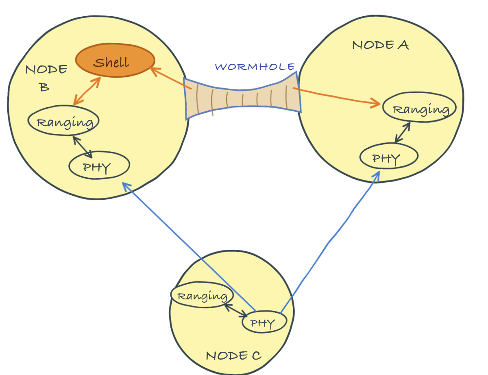

> container.add 'udplink', new UdpLink();
> addroute host('B'), host('B'), udplink
OK
> routes
uuid to nextHop link reliability hops dataRate metric enabled auto poll
------------------------------------------------------------------------------------------
foj9ie 31 31 udplink true 1 100000000 8.0 true true 0.011 Wormholes
Portals (Chapter 10) provide a way to transparently tunnel data through a Unet. Wormholes, on the other hand, provide a way to transparently connect agents across a Unet.
Every Unet node runs an agent framework — fjåge — in which all of the node’s agents live in a single universe and can freely exchange messages with one another. Agents on different nodes live in different universes, and normally talk to their peers only through protocols built on Unet links. A wormhole joins multiple fjåge universes over a Unet link, so that an agent on one node can send a message directly to an agent on another node as if they were neighbors in the same universe.

NoteWormholes and fjåge tunnels
fjåge can already connect containers directly over a reliable transport such as TCP/IP — using master/slave containers or a gateway — so that agents in different containers share a single logical universe. A wormhole offers the same “agents talking across nodes” experience, but over a Unet link that may be slow, lossy and high-latency. It is therefore deliberately selective (only messages addressed name@address, or sent to configured topics, are carried) and message-oriented (each message is serialized and sent as a datagram), rather than transparently merging the two universes. Use a fjåge tunnel when your nodes share a reliable IP link; use a wormhole when they are connected only by a Unet link.
The mechanism is simple and transparent. The Wormhole agent watches the local universe for messages addressed to an agent on a remote node, using the convention name@address — for example, ranging@31 refers to the ranging agent on node 31. When such a message is seen, the wormhole serializes it, carries it across the network as a datagram (over the agent named by its dsp parameter), and the wormhole on the destination node delivers it to the local agent. Responses travel back the same way. Messages larger than a link can carry comfortably are gzip-compressed when compression is enabled.
11.1 Setting up a wormhole
We will use a small 3-node network to demonstrate. Picture node A as a gateway buoy, node B as a surface node deployed from a boat, and node C as a submerged diver. Nodes A and B have both acoustic modems and in-air WiFi connectivity; node C only has acoustic connectivity.
Since nodes A and B share a WiFi network, we first give them a fast IP link to carry the wormhole, using the UdpLink agent (Section 7.1). On node A, add the link and route traffic for node B over it:
and do the same on node B, routing traffic for node A over the link:
> container.add 'udplink', new UdpLink();
> addroute host('A'), host('A'), udplink
OK
> routes
uuid to nextHop link reliability hops dataRate metric enabled auto poll
------------------------------------------------------------------------------------------
dcjs5b 232 232 udplink true 1 100000000 8.0 true true 0.0
Note
Because both simulated nodes run on this host, UdpLink’s automatic UDP broadcast discovery cannot reach them, so we register each peer’s address and port manually (as described in Section 7.1) — on node B:
> udplink[host('A')].address = '127.0.0.1';
> udplink[host('A')].port = 5100; // using the default port
> udplink.port // check port that node B is using
64206and on node A:
> udplink[host('B')].address = '127.0.0.1';
> udplink[host('B')].port = 64206; // port obtained as aboveOn a real WiFi network, discovery handles this for you.
Check that the IP link works by pinging node A from node B:
> ping host('A')
PING 232
Response from 232: seq=1 time=10 ms
1 packets transmitted, 1 packets received, 0% packet lossNow enable a Wormhole agent on both nodes, set to carry its traffic over the udplink:
> container.add 'wh', new org.arl.unet.wormhole.Wormhole();
> wh.dsp = 'udplink'
udplinkRepeat the same two commands on node B:
TipWormhole parameters
dsp– datagram service provider agent name (null to disable)publish– list of topic names to publish over the wormholepublishTo– publication destination address (0 for broadcast)compression– enable/disable data compression
That is the entire setup. We are now ready to use agents on node A from node B as if they were local.
11.2 Using a wormhole
The functionality we want is to track the diver (node C) from a script running on node B. This requires range measurements from node B to node C (easy — the ranging agent is local), and from node A to node C (harder — the ranging agent is on a different node). A wormhole makes the second measurement as easy as the first.
On node B, the local range to the diver uses the local ranging agent (Chapter 25), most conveniently through the range shell command:
> range host('C')
251.1918The range command is just a convenience wrapper: under the hood, it sends a RangeReq message to the local ranging agent, which agrees to make the measurement and later reports the result as a RangeNtf message. We could equally well have talked to the ranging agent directly:
> ranging << new RangeReq(to: host('C'))
AGREEwith a response shortly:
ranging >> RangeNtf:INFORM[from:31 to:74 range:251.1918 offset:-1989796507 rxStartTime:3297508195]To get the range from node A to the diver, we do exactly the same thing, but address node A’s ranging agent through the wormhole, using its name@address:
> rangingA = agent("ranging@${host('A')}");
> rangingA << new RangeReq(to: host('C'))
AGREEThe request is intercepted by the wormhole on node B, tunneled over the WiFi link to node A, and delivered to node A’s ranging agent — which thinks the request came from a local agent and accepts it (AGREE). Node A then ranges acoustically to the diver, and the measured range travels back through the wormhole to node B as a notification:
ranging@232 >> RangeNtf:INFORM[from:232 to:74 range:251.1918 offset:-590152176 rxStartTime:1903042864]The key observation is that, from node B, we can talk to node A’s agents exactly as if they were local. A diver-tracking application can therefore measure both ranges from a single script on node B and triangulate the diver’s position, without deploying any custom helper agent or remote-shell glue on node A.
11.3 Publishing notifications
So far we have sent requests to a remote agent. A wormhole can also forward notifications published on a node’s topics, so that a subscriber on another node receives them transparently. On node A, list the topics to forward in the publish parameter, and optionally restrict the destination with publishTo (the default, 0, broadcasts to all wormhole-connected nodes):
> wh.publish = [ranging]
[ranging]
> wh.publishTo = host('B')
31Note that publish takes the agent (or its notification topic), not a quoted name: [ranging] resolves to the ranging agent’s notification topic, whereas the string 'ranging' would match no topic and forward nothing.
On node B, subscribe to node A’s ranging agent through the wormhole, using the same name@address convention:
> subscribe agent("ranging@${host('A')}")Now any ranging notification generated on node A is delivered to node B. Trigger one by ranging from node A to the diver:
> range host('C')
251.1918and node B receives the range notification over the wormhole:
ranging@232 >> RangeNtf:INFORM[from:232 to:74 range:251.1918 offset:-590152176 rxStartTime:1909380864]
Tip
This pattern gets even better with one-way travel-time ranging (Section 25.6.3). Synchronize the surface nodes’ clocks with the diver’s; then a single beacon transmission from the diver produces a RangeNtf at every node that hears it, and wormhole publishing collects them all at one place — a full position fix from one transmission, with the diver’s modem spending almost no energy.
Caution
Wormholes are powerful, but they make it easy to generate a lot of cross-network traffic without thinking about it. Every remote message and every published notification consumes link bandwidth, which is scarce on acoustic links. Use a wormhole over a high-capacity link (such as WiFi or a wired connection) where possible, publish only the topics you need, and keep messages small.